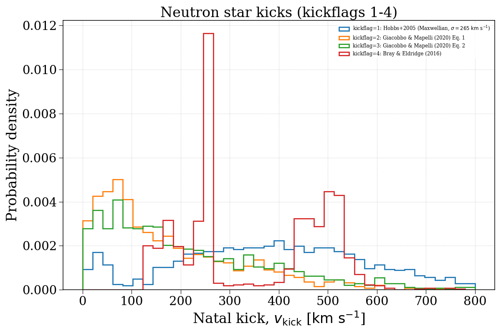
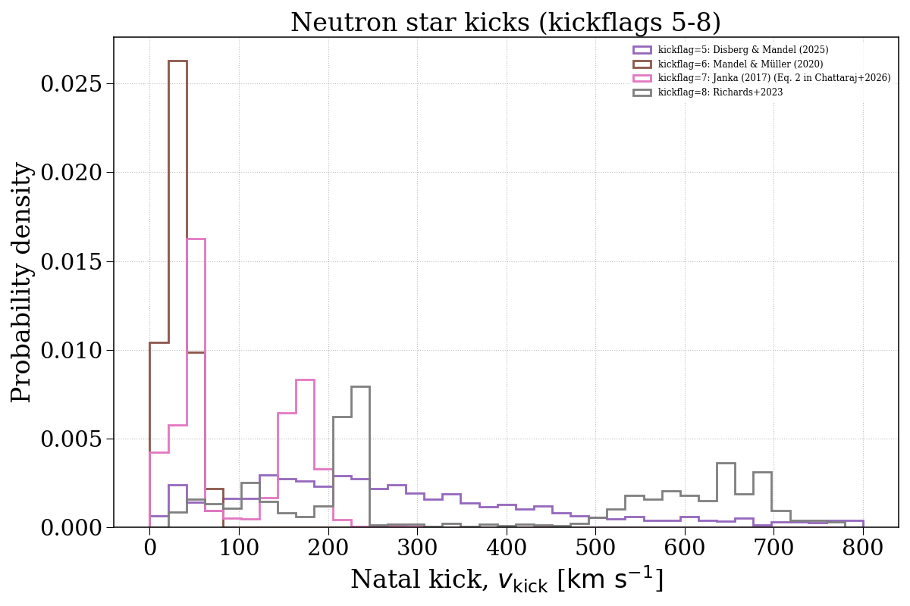
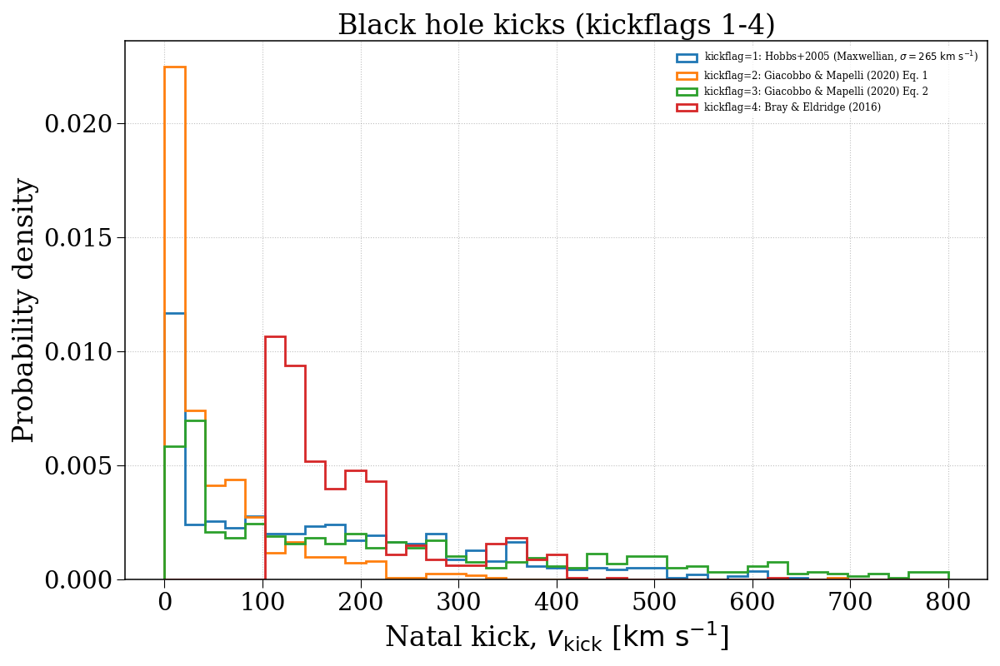
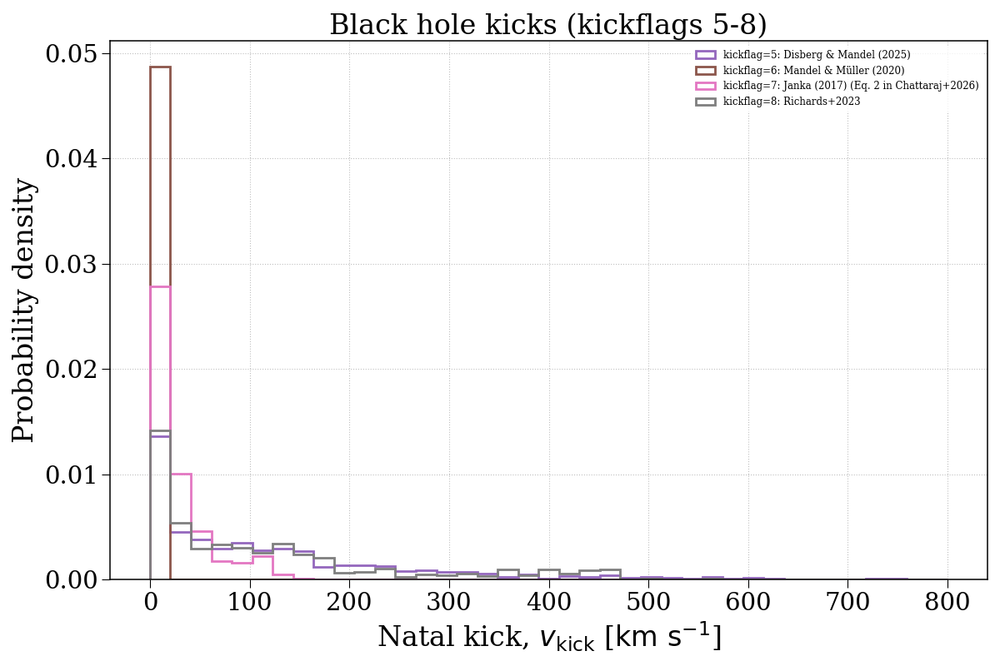

Note
Go to the end to download the full example code.
kickflag¶
This example demonstrates how changing the kickflag parameter can affect the natal kick velocity distributions of compact objects. We separate this into neutron stars and black holes.




Evolving population with kickflag = 1...
Evolving: 0%| | 0/2006 [00:00<?, ?sys/s]
Evolving: 1%| | 15/2006 [00:00<00:14, 139.09sys/s]
Evolving: 1%|▏ | 29/2006 [00:00<00:15, 128.20sys/s]
Evolving: 2%|▏ | 42/2006 [00:00<00:16, 122.21sys/s]
Evolving: 3%|▎ | 55/2006 [00:00<00:17, 110.91sys/s]
Evolving: 3%|▎ | 68/2006 [00:00<00:17, 113.50sys/s]
Evolving: 4%|▍ | 86/2006 [00:00<00:14, 132.21sys/s]
Evolving: 5%|▍ | 100/2006 [00:00<00:15, 125.14sys/s]
Evolving: 6%|▌ | 113/2006 [00:01<00:23, 81.38sys/s]
Evolving: 7%|▋ | 142/2006 [00:01<00:19, 97.50sys/s]
Evolving: 8%|▊ | 166/2006 [00:01<00:15, 122.58sys/s]
Evolving: 9%|▉ | 184/2006 [00:01<00:18, 99.83sys/s]
Evolving: 11%|█ | 216/2006 [00:01<00:13, 136.07sys/s]
Evolving: 12%|█▏ | 233/2006 [00:02<00:16, 108.92sys/s]
Evolving: 13%|█▎ | 257/2006 [00:02<00:17, 101.02sys/s]
Evolving: 14%|█▍ | 281/2006 [00:02<00:14, 118.22sys/s]
Evolving: 15%|█▍ | 296/2006 [00:02<00:14, 114.87sys/s]
Evolving: 15%|█▌ | 310/2006 [00:02<00:16, 100.94sys/s]
Evolving: 17%|█▋ | 339/2006 [00:02<00:12, 131.99sys/s]
Evolving: 18%|█▊ | 355/2006 [00:03<00:12, 133.65sys/s]
Evolving: 18%|█▊ | 370/2006 [00:03<00:12, 135.47sys/s]
Evolving: 19%|█▉ | 385/2006 [00:03<00:17, 92.65sys/s]
Evolving: 21%|██ | 414/2006 [00:03<00:12, 128.60sys/s]
Evolving: 21%|██▏ | 431/2006 [00:03<00:11, 136.94sys/s]
Evolving: 22%|██▏ | 448/2006 [00:03<00:12, 122.87sys/s]
Evolving: 23%|██▎ | 463/2006 [00:03<00:12, 125.00sys/s]
Evolving: 24%|██▍ | 478/2006 [00:04<00:12, 124.72sys/s]
Evolving: 25%|██▍ | 492/2006 [00:04<00:13, 112.52sys/s]
Evolving: 25%|██▌ | 505/2006 [00:04<00:17, 84.32sys/s]
Evolving: 26%|██▋ | 529/2006 [00:04<00:13, 107.86sys/s]
Evolving: 27%|██▋ | 547/2006 [00:04<00:12, 121.08sys/s]
Evolving: 28%|██▊ | 562/2006 [00:04<00:11, 127.41sys/s]
Evolving: 29%|██▉ | 577/2006 [00:04<00:11, 121.40sys/s]
Evolving: 30%|██▉ | 592/2006 [00:05<00:11, 120.59sys/s]
Evolving: 30%|███ | 608/2006 [00:05<00:10, 129.20sys/s]
Evolving: 31%|███ | 623/2006 [00:05<00:10, 132.90sys/s]
Evolving: 32%|███▏ | 637/2006 [00:05<00:14, 94.54sys/s]
Evolving: 33%|███▎ | 661/2006 [00:05<00:11, 122.26sys/s]
Evolving: 34%|███▎ | 677/2006 [00:05<00:10, 128.73sys/s]
Evolving: 35%|███▍ | 694/2006 [00:05<00:09, 135.70sys/s]
Evolving: 35%|███▌ | 709/2006 [00:06<00:09, 139.22sys/s]
Evolving: 36%|███▌ | 724/2006 [00:06<00:09, 134.02sys/s]
Evolving: 37%|███▋ | 739/2006 [00:06<00:10, 123.19sys/s]
Evolving: 37%|███▋ | 752/2006 [00:06<00:10, 119.98sys/s]
Evolving: 38%|███▊ | 765/2006 [00:06<00:11, 106.26sys/s]
Evolving: 39%|███▉ | 781/2006 [00:06<00:10, 115.64sys/s]
Evolving: 40%|███▉ | 794/2006 [00:06<00:10, 114.43sys/s]
Evolving: 40%|████ | 809/2006 [00:06<00:09, 121.05sys/s]
Evolving: 41%|████ | 824/2006 [00:06<00:09, 128.44sys/s]
Evolving: 42%|████▏ | 838/2006 [00:07<00:09, 126.02sys/s]
Evolving: 42%|████▏ | 852/2006 [00:07<00:10, 109.55sys/s]
Evolving: 43%|████▎ | 866/2006 [00:07<00:14, 80.83sys/s]
Evolving: 44%|████▎ | 876/2006 [00:07<00:14, 80.27sys/s]
Evolving: 45%|████▌ | 909/2006 [00:07<00:08, 129.51sys/s]
Evolving: 46%|████▌ | 925/2006 [00:07<00:08, 131.25sys/s]
Evolving: 47%|████▋ | 940/2006 [00:08<00:08, 126.85sys/s]
Evolving: 48%|████▊ | 954/2006 [00:08<00:11, 88.91sys/s]
Evolving: 48%|████▊ | 966/2006 [00:08<00:11, 92.93sys/s]
Evolving: 49%|████▉ | 988/2006 [00:08<00:08, 116.60sys/s]
Evolving: 50%|█████ | 1007/2006 [00:08<00:07, 132.28sys/s]
Evolving: 51%|█████ | 1023/2006 [00:08<00:07, 128.96sys/s]
Evolving: 52%|█████▏ | 1038/2006 [00:08<00:07, 130.92sys/s]
Evolving: 52%|█████▏ | 1053/2006 [00:09<00:08, 117.53sys/s]
Evolving: 53%|█████▎ | 1073/2006 [00:09<00:07, 120.64sys/s]
Evolving: 54%|█████▍ | 1091/2006 [00:09<00:07, 130.15sys/s]
Evolving: 55%|█████▌ | 1105/2006 [00:09<00:08, 108.62sys/s]
Evolving: 56%|█████▌ | 1122/2006 [00:09<00:07, 121.92sys/s]
Evolving: 57%|█████▋ | 1136/2006 [00:09<00:08, 105.02sys/s]
Evolving: 57%|█████▋ | 1148/2006 [00:10<00:09, 88.69sys/s]
Evolving: 58%|█████▊ | 1165/2006 [00:10<00:09, 85.48sys/s]
Evolving: 60%|█████▉ | 1198/2006 [00:10<00:06, 131.22sys/s]
Evolving: 61%|██████ | 1214/2006 [00:10<00:08, 97.01sys/s]
Evolving: 61%|██████ | 1227/2006 [00:10<00:08, 92.54sys/s]
Evolving: 63%|██████▎ | 1259/2006 [00:10<00:05, 131.39sys/s]
Evolving: 64%|██████▎ | 1276/2006 [00:11<00:05, 127.69sys/s]
Evolving: 64%|██████▍ | 1291/2006 [00:11<00:05, 130.03sys/s]
Evolving: 65%|██████▌ | 1306/2006 [00:11<00:07, 95.13sys/s]
Evolving: 66%|██████▋ | 1333/2006 [00:11<00:05, 123.99sys/s]
Evolving: 67%|██████▋ | 1349/2006 [00:11<00:06, 109.32sys/s]
Evolving: 68%|██████▊ | 1370/2006 [00:11<00:05, 126.46sys/s]
Evolving: 69%|██████▉ | 1385/2006 [00:11<00:04, 131.11sys/s]
Evolving: 70%|██████▉ | 1400/2006 [00:12<00:05, 118.97sys/s]
Evolving: 70%|███████ | 1414/2006 [00:12<00:04, 120.69sys/s]
Evolving: 71%|███████ | 1428/2006 [00:12<00:04, 123.02sys/s]
Evolving: 72%|███████▏ | 1442/2006 [00:12<00:04, 126.52sys/s]
Evolving: 73%|███████▎ | 1456/2006 [00:12<00:04, 127.87sys/s]
Evolving: 73%|███████▎ | 1470/2006 [00:12<00:06, 89.30sys/s]
Evolving: 75%|███████▍ | 1496/2006 [00:12<00:04, 121.62sys/s]
Evolving: 75%|███████▌ | 1511/2006 [00:13<00:04, 114.33sys/s]
Evolving: 76%|███████▌ | 1525/2006 [00:13<00:04, 107.59sys/s]
Evolving: 77%|███████▋ | 1545/2006 [00:13<00:03, 127.11sys/s]
Evolving: 78%|███████▊ | 1560/2006 [00:13<00:05, 85.90sys/s]
Evolving: 79%|███████▉ | 1589/2006 [00:13<00:03, 116.31sys/s]
Evolving: 80%|████████ | 1610/2006 [00:13<00:02, 134.02sys/s]
Evolving: 81%|████████ | 1627/2006 [00:14<00:02, 128.44sys/s]
Evolving: 82%|████████▏ | 1642/2006 [00:14<00:03, 97.36sys/s]
Evolving: 83%|████████▎ | 1668/2006 [00:14<00:03, 104.06sys/s]
Evolving: 85%|████████▍ | 1696/2006 [00:14<00:02, 134.05sys/s]
Evolving: 85%|████████▌ | 1713/2006 [00:14<00:02, 115.45sys/s]
Evolving: 86%|████████▌ | 1727/2006 [00:14<00:02, 116.50sys/s]
Evolving: 87%|████████▋ | 1743/2006 [00:15<00:02, 123.92sys/s]
Evolving: 88%|████████▊ | 1757/2006 [00:15<00:01, 127.48sys/s]
Evolving: 88%|████████▊ | 1771/2006 [00:15<00:01, 126.31sys/s]
Evolving: 89%|████████▉ | 1786/2006 [00:15<00:01, 128.88sys/s]
Evolving: 90%|████████▉ | 1800/2006 [00:15<00:01, 125.42sys/s]
Evolving: 90%|█████████ | 1815/2006 [00:15<00:01, 128.30sys/s]
Evolving: 91%|█████████ | 1829/2006 [00:15<00:01, 127.71sys/s]
Evolving: 92%|█████████▏| 1844/2006 [00:15<00:01, 133.14sys/s]
Evolving: 93%|█████████▎| 1858/2006 [00:16<00:01, 97.54sys/s]
Evolving: 93%|█████████▎| 1870/2006 [00:16<00:01, 96.59sys/s]
Evolving: 94%|█████████▍| 1890/2006 [00:16<00:01, 87.66sys/s]
Evolving: 96%|█████████▌| 1918/2006 [00:16<00:00, 123.93sys/s]
Evolving: 96%|█████████▋| 1933/2006 [00:16<00:00, 110.69sys/s]
Evolving: 97%|█████████▋| 1954/2006 [00:16<00:00, 130.07sys/s]
Evolving: 98%|█████████▊| 1970/2006 [00:16<00:00, 130.81sys/s]
Evolving: 99%|█████████▉| 1985/2006 [00:17<00:00, 100.70sys/s]
Evolving: 100%|██████████| 2006/2006 [00:17<00:00, 115.79sys/s]
[Time taken: 17.5569 seconds]
Evolving population with kickflag = 2...
Evolving: 0%| | 0/2006 [00:00<?, ?sys/s]
Evolving: 0%| | 5/2006 [00:00<00:40, 49.76sys/s]
Evolving: 1%| | 18/2006 [00:00<00:25, 78.38sys/s]
Evolving: 2%|▏ | 39/2006 [00:00<00:16, 122.23sys/s]
Evolving: 3%|▎ | 52/2006 [00:00<00:18, 103.32sys/s]
Evolving: 3%|▎ | 68/2006 [00:00<00:16, 118.79sys/s]
Evolving: 4%|▍ | 83/2006 [00:00<00:15, 127.91sys/s]
Evolving: 5%|▍ | 97/2006 [00:00<00:15, 124.73sys/s]
Evolving: 5%|▌ | 110/2006 [00:01<00:24, 78.18sys/s]
Evolving: 7%|▋ | 142/2006 [00:01<00:18, 99.01sys/s]
Evolving: 8%|▊ | 166/2006 [00:01<00:15, 121.23sys/s]
Evolving: 9%|▉ | 184/2006 [00:01<00:17, 101.58sys/s]
Evolving: 11%|█ | 215/2006 [00:01<00:13, 134.71sys/s]
Evolving: 12%|█▏ | 232/2006 [00:02<00:16, 107.23sys/s]
Evolving: 13%|█▎ | 257/2006 [00:02<00:17, 101.27sys/s]
Evolving: 14%|█▍ | 281/2006 [00:02<00:14, 118.67sys/s]
Evolving: 15%|█▍ | 296/2006 [00:02<00:14, 118.39sys/s]
Evolving: 15%|█▌ | 310/2006 [00:02<00:16, 100.40sys/s]
Evolving: 17%|█▋ | 339/2006 [00:02<00:12, 134.37sys/s]
Evolving: 18%|█▊ | 356/2006 [00:03<00:12, 128.30sys/s]
Evolving: 19%|█▊ | 372/2006 [00:03<00:12, 131.48sys/s]
Evolving: 19%|█▉ | 387/2006 [00:03<00:16, 95.28sys/s]
Evolving: 21%|██ | 417/2006 [00:03<00:11, 133.00sys/s]
Evolving: 22%|██▏ | 435/2006 [00:03<00:15, 99.92sys/s]
Evolving: 23%|██▎ | 465/2006 [00:04<00:11, 133.61sys/s]
Evolving: 24%|██▍ | 484/2006 [00:04<00:14, 105.53sys/s]
Evolving: 25%|██▍ | 499/2006 [00:04<00:14, 101.33sys/s]
Evolving: 26%|██▌ | 517/2006 [00:04<00:13, 112.51sys/s]
Evolving: 27%|██▋ | 533/2006 [00:04<00:12, 121.03sys/s]
Evolving: 27%|██▋ | 548/2006 [00:04<00:11, 124.96sys/s]
Evolving: 28%|██▊ | 563/2006 [00:04<00:11, 127.45sys/s]
Evolving: 29%|██▉ | 577/2006 [00:05<00:11, 121.78sys/s]
Evolving: 30%|██▉ | 592/2006 [00:05<00:11, 122.73sys/s]
Evolving: 30%|███ | 606/2006 [00:05<00:11, 123.96sys/s]
Evolving: 31%|███ | 622/2006 [00:05<00:10, 129.30sys/s]
Evolving: 32%|███▏ | 636/2006 [00:05<00:14, 92.95sys/s]
Evolving: 33%|███▎ | 661/2006 [00:05<00:10, 123.44sys/s]
Evolving: 34%|███▎ | 677/2006 [00:05<00:10, 130.06sys/s]
Evolving: 34%|███▍ | 692/2006 [00:06<00:10, 131.04sys/s]
Evolving: 35%|███▌ | 707/2006 [00:06<00:09, 132.92sys/s]
Evolving: 36%|███▌ | 722/2006 [00:06<00:10, 126.55sys/s]
Evolving: 37%|███▋ | 737/2006 [00:06<00:11, 112.28sys/s]
Evolving: 38%|███▊ | 756/2006 [00:06<00:13, 93.25sys/s]
Evolving: 39%|███▉ | 781/2006 [00:06<00:10, 119.49sys/s]
Evolving: 40%|███▉ | 796/2006 [00:06<00:10, 120.78sys/s]
Evolving: 41%|████ | 813/2006 [00:07<00:09, 130.43sys/s]
Evolving: 41%|████▏ | 828/2006 [00:07<00:08, 134.70sys/s]
Evolving: 42%|████▏ | 843/2006 [00:07<00:09, 128.10sys/s]
Evolving: 43%|████▎ | 857/2006 [00:07<00:09, 125.64sys/s]
Evolving: 43%|████▎ | 871/2006 [00:07<00:12, 89.00sys/s]
Evolving: 45%|████▍ | 894/2006 [00:07<00:09, 115.43sys/s]
Evolving: 45%|████▌ | 908/2006 [00:07<00:09, 117.99sys/s]
Evolving: 46%|████▌ | 922/2006 [00:07<00:09, 116.93sys/s]
Evolving: 47%|████▋ | 935/2006 [00:08<00:09, 116.24sys/s]
Evolving: 47%|████▋ | 948/2006 [00:08<00:10, 104.95sys/s]
Evolving: 48%|████▊ | 960/2006 [00:08<00:11, 91.54sys/s]
Evolving: 48%|████▊ | 970/2006 [00:08<00:11, 93.40sys/s]
Evolving: 49%|████▉ | 988/2006 [00:08<00:09, 109.89sys/s]
Evolving: 50%|█████ | 1007/2006 [00:08<00:07, 128.04sys/s]
Evolving: 51%|█████ | 1021/2006 [00:08<00:08, 121.03sys/s]
Evolving: 52%|█████▏ | 1037/2006 [00:09<00:07, 129.84sys/s]
Evolving: 52%|█████▏ | 1051/2006 [00:09<00:07, 128.80sys/s]
Evolving: 53%|█████▎ | 1065/2006 [00:09<00:07, 128.27sys/s]
Evolving: 54%|█████▍ | 1079/2006 [00:09<00:08, 109.89sys/s]
Evolving: 54%|█████▍ | 1092/2006 [00:09<00:10, 83.20sys/s]
Evolving: 56%|█████▌ | 1122/2006 [00:09<00:07, 124.76sys/s]
Evolving: 57%|█████▋ | 1137/2006 [00:09<00:07, 112.31sys/s]
Evolving: 57%|█████▋ | 1151/2006 [00:10<00:09, 92.83sys/s]
Evolving: 58%|█████▊ | 1165/2006 [00:10<00:09, 87.42sys/s]
Evolving: 60%|█████▉ | 1197/2006 [00:10<00:06, 128.59sys/s]
Evolving: 60%|██████ | 1213/2006 [00:10<00:08, 95.24sys/s]
Evolving: 61%|██████ | 1226/2006 [00:10<00:08, 91.67sys/s]
Evolving: 62%|██████▏ | 1251/2006 [00:11<00:06, 117.54sys/s]
Evolving: 63%|██████▎ | 1271/2006 [00:11<00:05, 133.91sys/s]
Evolving: 64%|██████▍ | 1287/2006 [00:11<00:05, 133.94sys/s]
Evolving: 65%|██████▍ | 1303/2006 [00:11<00:05, 129.66sys/s]
Evolving: 66%|██████▌ | 1318/2006 [00:11<00:06, 103.64sys/s]
Evolving: 67%|██████▋ | 1336/2006 [00:11<00:05, 114.20sys/s]
Evolving: 67%|██████▋ | 1349/2006 [00:11<00:06, 105.11sys/s]
Evolving: 68%|██████▊ | 1368/2006 [00:12<00:05, 121.75sys/s]
Evolving: 69%|██████▉ | 1382/2006 [00:12<00:04, 125.44sys/s]
Evolving: 70%|██████▉ | 1396/2006 [00:12<00:04, 127.18sys/s]
Evolving: 70%|███████ | 1410/2006 [00:12<00:05, 107.76sys/s]
Evolving: 71%|███████ | 1424/2006 [00:12<00:05, 114.49sys/s]
Evolving: 72%|███████▏ | 1439/2006 [00:12<00:04, 118.55sys/s]
Evolving: 73%|███████▎ | 1456/2006 [00:12<00:04, 129.70sys/s]
Evolving: 73%|███████▎ | 1470/2006 [00:13<00:06, 88.35sys/s]
Evolving: 75%|███████▍ | 1498/2006 [00:13<00:04, 124.82sys/s]
Evolving: 75%|███████▌ | 1514/2006 [00:13<00:04, 122.47sys/s]
Evolving: 76%|███████▌ | 1529/2006 [00:13<00:04, 111.18sys/s]
Evolving: 77%|███████▋ | 1543/2006 [00:13<00:03, 117.28sys/s]
Evolving: 78%|███████▊ | 1559/2006 [00:13<00:05, 83.02sys/s]
Evolving: 79%|███████▉ | 1589/2006 [00:13<00:03, 119.96sys/s]
Evolving: 80%|████████ | 1607/2006 [00:14<00:03, 131.13sys/s]
Evolving: 81%|████████ | 1624/2006 [00:14<00:03, 118.10sys/s]
Evolving: 82%|████████▏ | 1642/2006 [00:14<00:03, 98.67sys/s]
Evolving: 83%|████████▎ | 1668/2006 [00:14<00:03, 101.48sys/s]
Evolving: 85%|████████▍ | 1696/2006 [00:14<00:02, 130.88sys/s]
Evolving: 85%|████████▌ | 1712/2006 [00:15<00:02, 115.81sys/s]
Evolving: 86%|████████▋ | 1731/2006 [00:15<00:02, 126.73sys/s]
Evolving: 87%|████████▋ | 1746/2006 [00:15<00:02, 126.25sys/s]
Evolving: 88%|████████▊ | 1762/2006 [00:15<00:01, 130.94sys/s]
Evolving: 89%|████████▊ | 1777/2006 [00:15<00:01, 131.26sys/s]
Evolving: 89%|████████▉ | 1791/2006 [00:15<00:01, 128.37sys/s]
Evolving: 90%|████████▉ | 1805/2006 [00:15<00:01, 118.27sys/s]
Evolving: 91%|█████████ | 1824/2006 [00:15<00:01, 127.57sys/s]
Evolving: 92%|█████████▏| 1839/2006 [00:15<00:01, 128.50sys/s]
Evolving: 92%|█████████▏| 1853/2006 [00:16<00:01, 94.86sys/s]
Evolving: 93%|█████████▎| 1864/2006 [00:16<00:01, 89.38sys/s]
Evolving: 94%|█████████▍| 1890/2006 [00:16<00:01, 95.13sys/s]
Evolving: 96%|█████████▌| 1918/2006 [00:16<00:00, 129.16sys/s]
Evolving: 96%|█████████▋| 1934/2006 [00:16<00:00, 116.47sys/s]
Evolving: 97%|█████████▋| 1949/2006 [00:17<00:00, 122.93sys/s]
Evolving: 98%|█████████▊| 1967/2006 [00:17<00:00, 133.47sys/s]
Evolving: 99%|█████████▉| 1982/2006 [00:17<00:00, 96.65sys/s]
Evolving: 100%|██████████| 2006/2006 [00:17<00:00, 114.71sys/s]
[Time taken: 17.6621 seconds]
Evolving population with kickflag = 3...
Evolving: 0%| | 0/2006 [00:00<?, ?sys/s]
Evolving: 0%| | 8/2006 [00:00<00:26, 75.59sys/s]
Evolving: 1%| | 18/2006 [00:00<00:24, 81.41sys/s]
Evolving: 2%|▏ | 37/2006 [00:00<00:16, 119.75sys/s]
Evolving: 3%|▎ | 51/2006 [00:00<00:19, 100.14sys/s]
Evolving: 3%|▎ | 68/2006 [00:00<00:17, 109.62sys/s]
Evolving: 4%|▍ | 87/2006 [00:00<00:14, 129.94sys/s]
Evolving: 5%|▌ | 101/2006 [00:00<00:15, 125.21sys/s]
Evolving: 6%|▌ | 114/2006 [00:01<00:22, 84.47sys/s]
Evolving: 7%|▋ | 142/2006 [00:01<00:19, 97.64sys/s]
Evolving: 8%|▊ | 166/2006 [00:01<00:15, 121.58sys/s]
Evolving: 9%|▉ | 182/2006 [00:01<00:14, 126.93sys/s]
Evolving: 10%|▉ | 197/2006 [00:01<00:15, 116.85sys/s]
Evolving: 11%|█ | 213/2006 [00:01<00:14, 123.59sys/s]
Evolving: 11%|█▏ | 227/2006 [00:02<00:20, 88.53sys/s]
Evolving: 13%|█▎ | 257/2006 [00:02<00:17, 97.36sys/s]
Evolving: 14%|█▍ | 281/2006 [00:02<00:14, 118.52sys/s]
Evolving: 15%|█▍ | 296/2006 [00:02<00:14, 118.03sys/s]
Evolving: 15%|█▌ | 310/2006 [00:02<00:16, 101.56sys/s]
Evolving: 17%|█▋ | 337/2006 [00:02<00:12, 134.27sys/s]
Evolving: 18%|█▊ | 353/2006 [00:03<00:12, 130.22sys/s]
Evolving: 18%|█▊ | 369/2006 [00:03<00:12, 134.10sys/s]
Evolving: 19%|█▉ | 384/2006 [00:03<00:17, 91.63sys/s]
Evolving: 21%|██ | 417/2006 [00:03<00:12, 132.37sys/s]
Evolving: 22%|██▏ | 434/2006 [00:03<00:15, 101.64sys/s]
Evolving: 23%|██▎ | 464/2006 [00:04<00:11, 133.75sys/s]
Evolving: 24%|██▍ | 482/2006 [00:04<00:14, 104.76sys/s]
Evolving: 25%|██▍ | 497/2006 [00:04<00:14, 101.60sys/s]
Evolving: 25%|██▌ | 510/2006 [00:04<00:14, 106.12sys/s]
Evolving: 26%|██▋ | 531/2006 [00:04<00:11, 126.04sys/s]
Evolving: 27%|██▋ | 546/2006 [00:04<00:11, 130.34sys/s]
Evolving: 28%|██▊ | 561/2006 [00:04<00:10, 131.98sys/s]
Evolving: 29%|██▊ | 576/2006 [00:05<00:11, 122.03sys/s]
Evolving: 30%|██▉ | 592/2006 [00:05<00:11, 127.77sys/s]
Evolving: 30%|███ | 606/2006 [00:05<00:10, 128.82sys/s]
Evolving: 31%|███ | 623/2006 [00:05<00:10, 130.87sys/s]
Evolving: 32%|███▏ | 637/2006 [00:05<00:14, 97.35sys/s]
Evolving: 33%|███▎ | 661/2006 [00:05<00:10, 127.25sys/s]
Evolving: 34%|███▎ | 676/2006 [00:05<00:10, 130.15sys/s]
Evolving: 34%|███▍ | 691/2006 [00:05<00:09, 132.96sys/s]
Evolving: 35%|███▌ | 706/2006 [00:06<00:09, 134.29sys/s]
Evolving: 36%|███▌ | 721/2006 [00:06<00:09, 129.49sys/s]
Evolving: 37%|███▋ | 737/2006 [00:06<00:11, 113.91sys/s]
Evolving: 38%|███▊ | 756/2006 [00:06<00:13, 95.74sys/s]
Evolving: 39%|███▉ | 781/2006 [00:06<00:10, 122.32sys/s]
Evolving: 40%|███▉ | 796/2006 [00:06<00:09, 127.62sys/s]
Evolving: 40%|████ | 811/2006 [00:06<00:09, 122.91sys/s]
Evolving: 41%|████▏ | 828/2006 [00:07<00:09, 130.16sys/s]
Evolving: 42%|████▏ | 844/2006 [00:07<00:08, 129.30sys/s]
Evolving: 43%|████▎ | 859/2006 [00:07<00:09, 117.80sys/s]
Evolving: 43%|████▎ | 872/2006 [00:07<00:11, 95.85sys/s]
Evolving: 45%|████▍ | 895/2006 [00:07<00:08, 123.77sys/s]
Evolving: 45%|████▌ | 910/2006 [00:07<00:08, 122.84sys/s]
Evolving: 46%|████▌ | 924/2006 [00:07<00:08, 121.56sys/s]
Evolving: 47%|████▋ | 937/2006 [00:08<00:09, 116.71sys/s]
Evolving: 47%|████▋ | 950/2006 [00:08<00:09, 117.00sys/s]
Evolving: 48%|████▊ | 963/2006 [00:08<00:12, 82.11sys/s]
Evolving: 49%|████▉ | 988/2006 [00:08<00:09, 111.37sys/s]
Evolving: 50%|█████ | 1005/2006 [00:08<00:08, 123.05sys/s]
Evolving: 51%|█████ | 1020/2006 [00:08<00:07, 124.01sys/s]
Evolving: 52%|█████▏ | 1034/2006 [00:08<00:07, 125.64sys/s]
Evolving: 52%|█████▏ | 1048/2006 [00:09<00:07, 128.84sys/s]
Evolving: 53%|█████▎ | 1062/2006 [00:09<00:07, 127.27sys/s]
Evolving: 54%|█████▎ | 1076/2006 [00:09<00:07, 119.35sys/s]
Evolving: 54%|█████▍ | 1089/2006 [00:09<00:07, 121.86sys/s]
Evolving: 55%|█████▍ | 1102/2006 [00:09<00:09, 98.02sys/s]
Evolving: 56%|█████▌ | 1122/2006 [00:09<00:07, 121.35sys/s]
Evolving: 57%|█████▋ | 1136/2006 [00:09<00:08, 101.48sys/s]
Evolving: 57%|█████▋ | 1148/2006 [00:10<00:09, 89.49sys/s]
Evolving: 58%|█████▊ | 1165/2006 [00:10<00:09, 84.36sys/s]
Evolving: 60%|█████▉ | 1198/2006 [00:10<00:06, 128.81sys/s]
Evolving: 61%|██████ | 1214/2006 [00:10<00:08, 97.90sys/s]
Evolving: 61%|██████ | 1227/2006 [00:10<00:08, 92.75sys/s]
Evolving: 62%|██████▏ | 1251/2006 [00:10<00:06, 118.66sys/s]
Evolving: 63%|██████▎ | 1266/2006 [00:11<00:05, 124.56sys/s]
Evolving: 64%|██████▍ | 1282/2006 [00:11<00:05, 132.34sys/s]
Evolving: 65%|██████▍ | 1297/2006 [00:11<00:05, 132.53sys/s]
Evolving: 65%|██████▌ | 1312/2006 [00:11<00:06, 99.84sys/s]
Evolving: 67%|██████▋ | 1336/2006 [00:11<00:05, 125.99sys/s]
Evolving: 67%|██████▋ | 1351/2006 [00:11<00:05, 111.34sys/s]
Evolving: 68%|██████▊ | 1370/2006 [00:11<00:04, 127.35sys/s]
Evolving: 69%|██████▉ | 1385/2006 [00:11<00:04, 128.73sys/s]
Evolving: 70%|██████▉ | 1400/2006 [00:12<00:05, 117.62sys/s]
Evolving: 70%|███████ | 1413/2006 [00:12<00:05, 116.06sys/s]
Evolving: 71%|███████ | 1428/2006 [00:12<00:04, 117.47sys/s]
Evolving: 72%|███████▏ | 1443/2006 [00:12<00:04, 121.60sys/s]
Evolving: 73%|███████▎ | 1460/2006 [00:12<00:04, 133.37sys/s]
Evolving: 73%|███████▎ | 1474/2006 [00:12<00:06, 86.72sys/s]
Evolving: 75%|███████▍ | 1504/2006 [00:13<00:03, 126.70sys/s]
Evolving: 76%|███████▌ | 1521/2006 [00:13<00:04, 104.27sys/s]
Evolving: 77%|███████▋ | 1542/2006 [00:13<00:03, 122.04sys/s]
Evolving: 78%|███████▊ | 1559/2006 [00:13<00:04, 90.23sys/s]
Evolving: 79%|███████▉ | 1589/2006 [00:13<00:03, 121.31sys/s]
Evolving: 80%|████████ | 1608/2006 [00:13<00:02, 132.98sys/s]
Evolving: 81%|████████ | 1625/2006 [00:14<00:03, 123.81sys/s]
Evolving: 82%|████████▏ | 1642/2006 [00:14<00:03, 97.58sys/s]
Evolving: 83%|████████▎ | 1668/2006 [00:14<00:03, 105.46sys/s]
Evolving: 84%|████████▍ | 1694/2006 [00:14<00:02, 132.50sys/s]
Evolving: 85%|████████▌ | 1711/2006 [00:14<00:02, 116.32sys/s]
Evolving: 86%|████████▋ | 1731/2006 [00:15<00:02, 126.76sys/s]
Evolving: 87%|████████▋ | 1746/2006 [00:15<00:02, 126.36sys/s]
Evolving: 88%|████████▊ | 1763/2006 [00:15<00:01, 131.22sys/s]
Evolving: 89%|████████▊ | 1778/2006 [00:15<00:01, 134.71sys/s]
Evolving: 89%|████████▉ | 1793/2006 [00:15<00:01, 133.35sys/s]
Evolving: 90%|█████████ | 1807/2006 [00:15<00:01, 122.23sys/s]
Evolving: 91%|█████████ | 1823/2006 [00:15<00:01, 129.95sys/s]
Evolving: 92%|█████████▏| 1838/2006 [00:15<00:01, 133.57sys/s]
Evolving: 92%|█████████▏| 1852/2006 [00:16<00:01, 93.50sys/s]
Evolving: 93%|█████████▎| 1864/2006 [00:16<00:01, 87.42sys/s]
Evolving: 94%|█████████▍| 1890/2006 [00:16<00:01, 98.02sys/s]
Evolving: 96%|█████████▌| 1916/2006 [00:16<00:00, 128.77sys/s]
Evolving: 96%|█████████▋| 1932/2006 [00:16<00:00, 130.99sys/s]
Evolving: 97%|█████████▋| 1947/2006 [00:16<00:00, 127.70sys/s]
Evolving: 98%|█████████▊| 1961/2006 [00:16<00:00, 124.55sys/s]
Evolving: 98%|█████████▊| 1975/2006 [00:17<00:00, 125.24sys/s]
Evolving: 99%|█████████▉| 1989/2006 [00:17<00:00, 104.00sys/s]
Evolving: 100%|██████████| 2006/2006 [00:17<00:00, 115.89sys/s]
[Time taken: 17.5045 seconds]
Evolving population with kickflag = 4...
Evolving: 0%| | 0/2006 [00:00<?, ?sys/s]
Evolving: 0%| | 7/2006 [00:00<00:31, 63.26sys/s]
Evolving: 1%| | 18/2006 [00:00<00:26, 73.64sys/s]
Evolving: 2%|▏ | 38/2006 [00:00<00:16, 122.04sys/s]
Evolving: 3%|▎ | 51/2006 [00:00<00:19, 100.16sys/s]
Evolving: 3%|▎ | 68/2006 [00:00<00:16, 119.53sys/s]
Evolving: 4%|▍ | 84/2006 [00:00<00:15, 126.91sys/s]
Evolving: 5%|▍ | 98/2006 [00:00<00:15, 122.06sys/s]
Evolving: 6%|▌ | 111/2006 [00:01<00:23, 81.51sys/s]
Evolving: 7%|▋ | 142/2006 [00:01<00:18, 101.18sys/s]
Evolving: 8%|▊ | 166/2006 [00:01<00:14, 122.74sys/s]
Evolving: 9%|▉ | 184/2006 [00:01<00:18, 101.09sys/s]
Evolving: 11%|█ | 216/2006 [00:01<00:12, 139.82sys/s]
Evolving: 12%|█▏ | 234/2006 [00:02<00:17, 103.06sys/s]
Evolving: 13%|█▎ | 257/2006 [00:02<00:18, 95.79sys/s]
Evolving: 15%|█▍ | 292/2006 [00:02<00:12, 135.20sys/s]
Evolving: 16%|█▌ | 311/2006 [00:02<00:16, 105.42sys/s]
Evolving: 17%|█▋ | 339/2006 [00:02<00:12, 129.97sys/s]
Evolving: 18%|█▊ | 357/2006 [00:03<00:12, 129.75sys/s]
Evolving: 19%|█▊ | 374/2006 [00:03<00:12, 132.06sys/s]
Evolving: 19%|█▉ | 390/2006 [00:03<00:15, 103.73sys/s]
Evolving: 21%|██ | 417/2006 [00:03<00:12, 131.50sys/s]
Evolving: 22%|██▏ | 434/2006 [00:03<00:15, 100.95sys/s]
Evolving: 23%|██▎ | 465/2006 [00:04<00:11, 136.06sys/s]
Evolving: 24%|██▍ | 483/2006 [00:04<00:14, 107.37sys/s]
Evolving: 25%|██▍ | 498/2006 [00:04<00:14, 103.64sys/s]
Evolving: 26%|██▌ | 517/2006 [00:04<00:12, 118.03sys/s]
Evolving: 27%|██▋ | 532/2006 [00:04<00:12, 120.00sys/s]
Evolving: 27%|██▋ | 546/2006 [00:04<00:11, 122.65sys/s]
Evolving: 28%|██▊ | 563/2006 [00:04<00:11, 128.79sys/s]
Evolving: 29%|██▉ | 577/2006 [00:05<00:11, 120.72sys/s]
Evolving: 30%|██▉ | 594/2006 [00:05<00:11, 127.75sys/s]
Evolving: 30%|███ | 610/2006 [00:05<00:10, 131.92sys/s]
Evolving: 31%|███ | 624/2006 [00:05<00:10, 132.45sys/s]
Evolving: 32%|███▏ | 638/2006 [00:05<00:14, 94.78sys/s]
Evolving: 33%|███▎ | 667/2006 [00:05<00:09, 135.22sys/s]
Evolving: 34%|███▍ | 684/2006 [00:05<00:09, 134.54sys/s]
Evolving: 35%|███▍ | 700/2006 [00:05<00:09, 132.80sys/s]
Evolving: 36%|███▌ | 715/2006 [00:06<00:09, 129.60sys/s]
Evolving: 36%|███▋ | 730/2006 [00:06<00:09, 130.63sys/s]
Evolving: 37%|███▋ | 744/2006 [00:06<00:09, 128.74sys/s]
Evolving: 38%|███▊ | 758/2006 [00:06<00:13, 93.34sys/s]
Evolving: 39%|███▉ | 781/2006 [00:06<00:10, 119.84sys/s]
Evolving: 40%|███▉ | 796/2006 [00:06<00:09, 122.50sys/s]
Evolving: 40%|████ | 810/2006 [00:06<00:09, 121.18sys/s]
Evolving: 41%|████ | 827/2006 [00:07<00:09, 130.12sys/s]
Evolving: 42%|████▏ | 841/2006 [00:07<00:08, 132.25sys/s]
Evolving: 43%|████▎ | 855/2006 [00:07<00:09, 120.91sys/s]
Evolving: 43%|████▎ | 868/2006 [00:07<00:13, 82.05sys/s]
Evolving: 45%|████▍ | 899/2006 [00:07<00:09, 122.88sys/s]
Evolving: 46%|████▌ | 915/2006 [00:07<00:09, 119.35sys/s]
Evolving: 46%|████▋ | 929/2006 [00:07<00:08, 123.00sys/s]
Evolving: 47%|████▋ | 943/2006 [00:08<00:08, 124.62sys/s]
Evolving: 48%|████▊ | 957/2006 [00:08<00:11, 90.56sys/s]
Evolving: 49%|████▉ | 979/2006 [00:08<00:08, 115.21sys/s]
Evolving: 50%|████▉ | 993/2006 [00:08<00:08, 116.67sys/s]
Evolving: 50%|█████ | 1007/2006 [00:08<00:08, 119.37sys/s]
Evolving: 51%|█████ | 1021/2006 [00:08<00:08, 121.32sys/s]
Evolving: 52%|█████▏ | 1035/2006 [00:08<00:07, 121.98sys/s]
Evolving: 52%|█████▏ | 1051/2006 [00:08<00:07, 128.12sys/s]
Evolving: 53%|█████▎ | 1065/2006 [00:09<00:07, 127.60sys/s]
Evolving: 54%|█████▍ | 1079/2006 [00:09<00:07, 122.37sys/s]
Evolving: 54%|█████▍ | 1092/2006 [00:09<00:10, 85.94sys/s]
Evolving: 56%|█████▌ | 1122/2006 [00:09<00:07, 123.19sys/s]
Evolving: 57%|█████▋ | 1137/2006 [00:09<00:07, 111.70sys/s]
Evolving: 57%|█████▋ | 1150/2006 [00:10<00:09, 90.27sys/s]
Evolving: 58%|█████▊ | 1165/2006 [00:10<00:09, 86.90sys/s]
Evolving: 60%|█████▉ | 1199/2006 [00:10<00:06, 123.76sys/s]
Evolving: 60%|██████ | 1213/2006 [00:10<00:08, 98.03sys/s]
Evolving: 61%|██████ | 1225/2006 [00:10<00:08, 95.69sys/s]
Evolving: 62%|██████▏ | 1251/2006 [00:10<00:06, 121.15sys/s]
Evolving: 63%|██████▎ | 1272/2006 [00:10<00:05, 133.05sys/s]
Evolving: 64%|██████▍ | 1287/2006 [00:11<00:05, 136.67sys/s]
Evolving: 65%|██████▍ | 1302/2006 [00:11<00:05, 139.46sys/s]
Evolving: 66%|██████▌ | 1317/2006 [00:11<00:06, 107.90sys/s]
Evolving: 67%|██████▋ | 1336/2006 [00:11<00:05, 124.85sys/s]
Evolving: 67%|██████▋ | 1351/2006 [00:11<00:05, 112.78sys/s]
Evolving: 68%|██████▊ | 1364/2006 [00:11<00:05, 114.37sys/s]
Evolving: 69%|██████▉ | 1384/2006 [00:11<00:04, 132.53sys/s]
Evolving: 70%|██████▉ | 1399/2006 [00:12<00:05, 116.47sys/s]
Evolving: 70%|███████ | 1413/2006 [00:12<00:05, 115.47sys/s]
Evolving: 71%|███████ | 1428/2006 [00:12<00:04, 121.65sys/s]
Evolving: 72%|███████▏ | 1442/2006 [00:12<00:04, 122.94sys/s]
Evolving: 73%|███████▎ | 1457/2006 [00:12<00:04, 128.94sys/s]
Evolving: 73%|███████▎ | 1471/2006 [00:12<00:06, 88.53sys/s]
Evolving: 75%|███████▍ | 1499/2006 [00:12<00:04, 125.22sys/s]
Evolving: 76%|███████▌ | 1515/2006 [00:13<00:03, 125.11sys/s]
Evolving: 76%|███████▋ | 1530/2006 [00:13<00:04, 116.42sys/s]
Evolving: 77%|███████▋ | 1544/2006 [00:13<00:03, 121.47sys/s]
Evolving: 78%|███████▊ | 1558/2006 [00:13<00:03, 122.16sys/s]
Evolving: 78%|███████▊ | 1571/2006 [00:13<00:04, 95.86sys/s]
Evolving: 79%|███████▉ | 1589/2006 [00:13<00:03, 110.35sys/s]
Evolving: 80%|████████ | 1610/2006 [00:13<00:03, 128.80sys/s]
Evolving: 81%|████████ | 1625/2006 [00:14<00:03, 115.26sys/s]
Evolving: 82%|████████▏ | 1642/2006 [00:14<00:03, 95.00sys/s]
Evolving: 83%|████████▎ | 1668/2006 [00:14<00:03, 104.26sys/s]
Evolving: 84%|████████▍ | 1694/2006 [00:14<00:02, 132.53sys/s]
Evolving: 85%|████████▌ | 1710/2006 [00:14<00:02, 112.47sys/s]
Evolving: 86%|████████▋ | 1731/2006 [00:14<00:02, 125.63sys/s]
Evolving: 87%|████████▋ | 1747/2006 [00:15<00:01, 130.13sys/s]
Evolving: 88%|████████▊ | 1762/2006 [00:15<00:01, 132.99sys/s]
Evolving: 89%|████████▊ | 1777/2006 [00:15<00:01, 129.26sys/s]
Evolving: 89%|████████▉ | 1791/2006 [00:15<00:01, 126.24sys/s]
Evolving: 90%|████████▉ | 1805/2006 [00:15<00:01, 122.37sys/s]
Evolving: 91%|█████████ | 1822/2006 [00:15<00:01, 133.41sys/s]
Evolving: 92%|█████████▏| 1836/2006 [00:15<00:01, 133.67sys/s]
Evolving: 92%|█████████▏| 1851/2006 [00:15<00:01, 92.06sys/s]
Evolving: 93%|█████████▎| 1863/2006 [00:16<00:01, 87.87sys/s]
Evolving: 94%|█████████▍| 1890/2006 [00:16<00:01, 97.73sys/s]
Evolving: 96%|█████████▌| 1916/2006 [00:16<00:00, 127.58sys/s]
Evolving: 96%|█████████▋| 1932/2006 [00:16<00:00, 134.09sys/s]
Evolving: 97%|█████████▋| 1948/2006 [00:16<00:00, 130.85sys/s]
Evolving: 98%|█████████▊| 1963/2006 [00:16<00:00, 128.85sys/s]
Evolving: 99%|█████████▊| 1977/2006 [00:16<00:00, 126.43sys/s]
Evolving: 99%|█████████▉| 1991/2006 [00:17<00:00, 109.01sys/s]
Evolving: 100%|██████████| 2006/2006 [00:17<00:00, 116.49sys/s]
[Time taken: 17.4060 seconds]
Evolving population with kickflag = 5...
Evolving: 0%| | 0/2006 [00:00<?, ?sys/s]
Evolving: 1%| | 11/2006 [00:00<00:20, 98.30sys/s]
Evolving: 1%| | 21/2006 [00:00<00:20, 98.89sys/s]
Evolving: 2%|▏ | 36/2006 [00:00<00:17, 110.18sys/s]
Evolving: 3%|▎ | 51/2006 [00:00<00:19, 101.03sys/s]
Evolving: 3%|▎ | 68/2006 [00:00<00:17, 109.96sys/s]
Evolving: 4%|▍ | 86/2006 [00:00<00:15, 128.00sys/s]
Evolving: 5%|▍ | 100/2006 [00:00<00:15, 119.48sys/s]
Evolving: 6%|▌ | 113/2006 [00:01<00:23, 82.02sys/s]
Evolving: 7%|▋ | 142/2006 [00:01<00:19, 97.21sys/s]
Evolving: 9%|▊ | 171/2006 [00:01<00:15, 121.23sys/s]
Evolving: 9%|▉ | 185/2006 [00:01<00:17, 103.90sys/s]
Evolving: 11%|█ | 215/2006 [00:01<00:13, 135.52sys/s]
Evolving: 12%|█▏ | 231/2006 [00:02<00:17, 103.90sys/s]
Evolving: 13%|█▎ | 257/2006 [00:02<00:17, 101.45sys/s]
Evolving: 14%|█▍ | 281/2006 [00:02<00:14, 118.78sys/s]
Evolving: 15%|█▍ | 296/2006 [00:02<00:14, 118.22sys/s]
Evolving: 15%|█▌ | 310/2006 [00:02<00:16, 104.79sys/s]
Evolving: 17%|█▋ | 337/2006 [00:02<00:12, 132.95sys/s]
Evolving: 18%|█▊ | 353/2006 [00:03<00:12, 135.21sys/s]
Evolving: 18%|█▊ | 368/2006 [00:03<00:11, 137.59sys/s]
Evolving: 19%|█▉ | 383/2006 [00:03<00:14, 114.65sys/s]
Evolving: 20%|█▉ | 396/2006 [00:03<00:14, 109.39sys/s]
Evolving: 21%|██ | 419/2006 [00:03<00:11, 134.61sys/s]
Evolving: 22%|██▏ | 434/2006 [00:03<00:16, 96.37sys/s]
Evolving: 23%|██▎ | 455/2006 [00:04<00:16, 93.71sys/s]
Evolving: 24%|██▎ | 473/2006 [00:04<00:14, 105.63sys/s]
Evolving: 24%|██▍ | 486/2006 [00:04<00:15, 95.80sys/s]
Evolving: 25%|██▍ | 497/2006 [00:04<00:17, 86.57sys/s]
Evolving: 25%|██▌ | 507/2006 [00:04<00:16, 88.72sys/s]
Evolving: 26%|██▋ | 531/2006 [00:04<00:12, 118.60sys/s]
Evolving: 27%|██▋ | 545/2006 [00:04<00:11, 122.82sys/s]
Evolving: 28%|██▊ | 561/2006 [00:05<00:11, 129.30sys/s]
Evolving: 29%|██▊ | 575/2006 [00:05<00:11, 122.08sys/s]
Evolving: 29%|██▉ | 590/2006 [00:05<00:11, 125.51sys/s]
Evolving: 30%|███ | 604/2006 [00:05<00:11, 118.46sys/s]
Evolving: 31%|███ | 621/2006 [00:05<00:10, 131.21sys/s]
Evolving: 32%|███▏ | 635/2006 [00:05<00:10, 128.93sys/s]
Evolving: 32%|███▏ | 649/2006 [00:05<00:12, 112.10sys/s]
Evolving: 33%|███▎ | 667/2006 [00:05<00:10, 125.60sys/s]
Evolving: 34%|███▍ | 681/2006 [00:06<00:10, 121.34sys/s]
Evolving: 35%|███▍ | 695/2006 [00:06<00:10, 123.92sys/s]
Evolving: 35%|███▌ | 710/2006 [00:06<00:11, 116.44sys/s]
Evolving: 36%|███▋ | 729/2006 [00:06<00:09, 130.30sys/s]
Evolving: 37%|███▋ | 744/2006 [00:06<00:09, 134.20sys/s]
Evolving: 38%|███▊ | 758/2006 [00:06<00:13, 94.05sys/s]
Evolving: 39%|███▉ | 781/2006 [00:06<00:10, 117.07sys/s]
Evolving: 40%|███▉ | 796/2006 [00:06<00:09, 122.45sys/s]
Evolving: 40%|████ | 810/2006 [00:07<00:09, 121.98sys/s]
Evolving: 41%|████ | 825/2006 [00:07<00:09, 125.84sys/s]
Evolving: 42%|████▏ | 841/2006 [00:07<00:08, 133.91sys/s]
Evolving: 43%|████▎ | 856/2006 [00:07<00:08, 127.82sys/s]
Evolving: 43%|████▎ | 870/2006 [00:07<00:12, 90.34sys/s]
Evolving: 44%|████▍ | 892/2006 [00:07<00:09, 114.97sys/s]
Evolving: 45%|████▌ | 906/2006 [00:07<00:09, 120.43sys/s]
Evolving: 46%|████▌ | 920/2006 [00:08<00:09, 118.06sys/s]
Evolving: 47%|████▋ | 933/2006 [00:08<00:09, 110.92sys/s]
Evolving: 47%|████▋ | 948/2006 [00:08<00:09, 114.21sys/s]
Evolving: 48%|████▊ | 961/2006 [00:08<00:11, 94.10sys/s]
Evolving: 49%|████▉ | 980/2006 [00:08<00:09, 111.61sys/s]
Evolving: 50%|████▉ | 993/2006 [00:08<00:08, 114.43sys/s]
Evolving: 50%|█████ | 1008/2006 [00:08<00:08, 117.19sys/s]
Evolving: 51%|█████ | 1022/2006 [00:08<00:08, 122.51sys/s]
Evolving: 52%|█████▏ | 1035/2006 [00:09<00:07, 121.94sys/s]
Evolving: 52%|█████▏ | 1051/2006 [00:09<00:07, 125.38sys/s]
Evolving: 53%|█████▎ | 1064/2006 [00:09<00:07, 125.82sys/s]
Evolving: 54%|█████▎ | 1077/2006 [00:09<00:08, 115.91sys/s]
Evolving: 54%|█████▍ | 1092/2006 [00:09<00:10, 87.83sys/s]
Evolving: 56%|█████▌ | 1122/2006 [00:09<00:06, 129.85sys/s]
Evolving: 57%|█████▋ | 1138/2006 [00:10<00:07, 108.95sys/s]
Evolving: 57%|█████▋ | 1151/2006 [00:10<00:08, 96.14sys/s]
Evolving: 58%|█████▊ | 1165/2006 [00:10<00:09, 86.27sys/s]
Evolving: 60%|█████▉ | 1198/2006 [00:10<00:06, 131.09sys/s]
Evolving: 61%|██████ | 1215/2006 [00:10<00:07, 99.09sys/s]
Evolving: 61%|██████▏ | 1229/2006 [00:10<00:08, 96.21sys/s]
Evolving: 62%|██████▏ | 1251/2006 [00:11<00:06, 115.83sys/s]
Evolving: 63%|██████▎ | 1271/2006 [00:11<00:05, 132.34sys/s]
Evolving: 64%|██████▍ | 1287/2006 [00:11<00:05, 131.35sys/s]
Evolving: 65%|██████▍ | 1302/2006 [00:11<00:05, 135.32sys/s]
Evolving: 66%|██████▌ | 1317/2006 [00:11<00:06, 107.94sys/s]
Evolving: 66%|██████▋ | 1330/2006 [00:11<00:06, 112.09sys/s]
Evolving: 67%|██████▋ | 1343/2006 [00:11<00:06, 95.22sys/s]
Evolving: 68%|██████▊ | 1368/2006 [00:12<00:05, 118.74sys/s]
Evolving: 69%|██████▉ | 1386/2006 [00:12<00:04, 131.61sys/s]
Evolving: 70%|██████▉ | 1401/2006 [00:12<00:05, 120.57sys/s]
Evolving: 70%|███████ | 1414/2006 [00:12<00:05, 118.33sys/s]
Evolving: 71%|███████ | 1427/2006 [00:12<00:05, 115.57sys/s]
Evolving: 72%|███████▏ | 1445/2006 [00:12<00:04, 130.09sys/s]
Evolving: 73%|███████▎ | 1459/2006 [00:12<00:04, 127.14sys/s]
Evolving: 73%|███████▎ | 1473/2006 [00:13<00:05, 93.19sys/s]
Evolving: 75%|███████▍ | 1497/2006 [00:13<00:04, 117.49sys/s]
Evolving: 75%|███████▌ | 1511/2006 [00:13<00:04, 111.69sys/s]
Evolving: 76%|███████▌ | 1524/2006 [00:13<00:04, 107.44sys/s]
Evolving: 77%|███████▋ | 1545/2006 [00:13<00:03, 123.05sys/s]
Evolving: 78%|███████▊ | 1559/2006 [00:13<00:05, 84.97sys/s]
Evolving: 79%|███████▉ | 1589/2006 [00:13<00:03, 122.54sys/s]
Evolving: 80%|████████ | 1608/2006 [00:14<00:02, 134.82sys/s]
Evolving: 81%|████████ | 1625/2006 [00:14<00:03, 123.41sys/s]
Evolving: 82%|████████▏ | 1642/2006 [00:14<00:03, 99.34sys/s]
Evolving: 83%|████████▎ | 1668/2006 [00:14<00:03, 105.44sys/s]
Evolving: 85%|████████▍ | 1697/2006 [00:14<00:02, 129.97sys/s]
Evolving: 85%|████████▌ | 1712/2006 [00:15<00:02, 118.81sys/s]
Evolving: 86%|████████▌ | 1728/2006 [00:15<00:02, 125.39sys/s]
Evolving: 87%|████████▋ | 1743/2006 [00:15<00:02, 129.70sys/s]
Evolving: 88%|████████▊ | 1757/2006 [00:15<00:01, 130.40sys/s]
Evolving: 88%|████████▊ | 1771/2006 [00:15<00:01, 129.21sys/s]
Evolving: 89%|████████▉ | 1786/2006 [00:15<00:01, 132.86sys/s]
Evolving: 90%|████████▉ | 1800/2006 [00:15<00:01, 130.98sys/s]
Evolving: 90%|█████████ | 1814/2006 [00:15<00:01, 127.30sys/s]
Evolving: 91%|█████████ | 1828/2006 [00:15<00:01, 123.49sys/s]
Evolving: 92%|█████████▏| 1846/2006 [00:16<00:01, 136.96sys/s]
Evolving: 93%|█████████▎| 1860/2006 [00:16<00:01, 97.53sys/s]
Evolving: 93%|█████████▎| 1872/2006 [00:16<00:01, 98.41sys/s]
Evolving: 94%|█████████▍| 1890/2006 [00:16<00:01, 88.34sys/s]
Evolving: 96%|█████████▌| 1916/2006 [00:16<00:00, 120.89sys/s]
Evolving: 96%|█████████▋| 1933/2006 [00:16<00:00, 110.62sys/s]
Evolving: 97%|█████████▋| 1954/2006 [00:17<00:00, 129.16sys/s]
Evolving: 98%|█████████▊| 1969/2006 [00:17<00:00, 130.14sys/s]
Evolving: 99%|█████████▉| 1984/2006 [00:17<00:00, 95.93sys/s]
Evolving: 100%|██████████| 2006/2006 [00:17<00:00, 114.78sys/s]
[Time taken: 17.6590 seconds]
Evolving population with kickflag = 6...
Evolving: 0%| | 0/2006 [00:00<?, ?sys/s]
Evolving: 0%| | 7/2006 [00:00<00:30, 66.44sys/s]
Evolving: 1%| | 18/2006 [00:00<00:22, 90.16sys/s]
Evolving: 2%|▏ | 34/2006 [00:00<00:17, 113.03sys/s]
Evolving: 2%|▏ | 48/2006 [00:00<00:16, 119.11sys/s]
Evolving: 3%|▎ | 60/2006 [00:00<00:16, 118.60sys/s]
Evolving: 4%|▎ | 72/2006 [00:00<00:17, 113.16sys/s]
Evolving: 4%|▍ | 87/2006 [00:00<00:15, 124.21sys/s]
Evolving: 5%|▍ | 100/2006 [00:00<00:16, 118.55sys/s]
Evolving: 6%|▌ | 112/2006 [00:01<00:24, 78.05sys/s]
Evolving: 7%|▋ | 142/2006 [00:01<00:19, 95.20sys/s]
Evolving: 8%|▊ | 166/2006 [00:01<00:15, 120.10sys/s]
Evolving: 9%|▉ | 184/2006 [00:01<00:18, 99.77sys/s]
Evolving: 11%|█ | 216/2006 [00:01<00:13, 133.99sys/s]
Evolving: 12%|█▏ | 232/2006 [00:02<00:16, 105.87sys/s]
Evolving: 13%|█▎ | 257/2006 [00:02<00:18, 97.03sys/s]
Evolving: 14%|█▍ | 281/2006 [00:02<00:14, 118.28sys/s]
Evolving: 15%|█▍ | 296/2006 [00:02<00:14, 120.14sys/s]
Evolving: 16%|█▌ | 311/2006 [00:02<00:16, 103.58sys/s]
Evolving: 17%|█▋ | 339/2006 [00:02<00:12, 134.57sys/s]
Evolving: 18%|█▊ | 356/2006 [00:03<00:12, 131.23sys/s]
Evolving: 18%|█▊ | 371/2006 [00:03<00:12, 132.76sys/s]
Evolving: 19%|█▉ | 386/2006 [00:03<00:17, 94.43sys/s]
Evolving: 21%|██ | 414/2006 [00:03<00:12, 129.06sys/s]
Evolving: 21%|██▏ | 431/2006 [00:03<00:12, 128.48sys/s]
Evolving: 22%|██▏ | 447/2006 [00:03<00:13, 117.44sys/s]
Evolving: 23%|██▎ | 464/2006 [00:04<00:11, 128.63sys/s]
Evolving: 24%|██▍ | 479/2006 [00:04<00:17, 89.81sys/s]
Evolving: 25%|██▍ | 495/2006 [00:04<00:15, 94.62sys/s]
Evolving: 25%|██▌ | 507/2006 [00:04<00:15, 99.03sys/s]
Evolving: 26%|██▋ | 529/2006 [00:04<00:11, 123.27sys/s]
Evolving: 27%|██▋ | 545/2006 [00:04<00:11, 124.21sys/s]
Evolving: 28%|██▊ | 562/2006 [00:04<00:10, 133.42sys/s]
Evolving: 29%|██▉ | 577/2006 [00:05<00:11, 128.24sys/s]
Evolving: 29%|██▉ | 591/2006 [00:05<00:10, 129.26sys/s]
Evolving: 30%|███ | 606/2006 [00:05<00:10, 129.68sys/s]
Evolving: 31%|███ | 622/2006 [00:05<00:10, 135.34sys/s]
Evolving: 32%|███▏ | 636/2006 [00:05<00:14, 92.85sys/s]
Evolving: 33%|███▎ | 661/2006 [00:05<00:10, 123.27sys/s]
Evolving: 34%|███▎ | 676/2006 [00:05<00:10, 126.78sys/s]
Evolving: 35%|███▍ | 693/2006 [00:05<00:09, 133.06sys/s]
Evolving: 35%|███▌ | 708/2006 [00:06<00:09, 136.81sys/s]
Evolving: 36%|███▌ | 723/2006 [00:06<00:09, 136.37sys/s]
Evolving: 37%|███▋ | 738/2006 [00:06<00:10, 121.84sys/s]
Evolving: 37%|███▋ | 751/2006 [00:06<00:10, 117.99sys/s]
Evolving: 38%|███▊ | 764/2006 [00:06<00:12, 102.93sys/s]
Evolving: 39%|███▉ | 781/2006 [00:06<00:11, 111.28sys/s]
Evolving: 40%|███▉ | 794/2006 [00:06<00:10, 114.40sys/s]
Evolving: 40%|████ | 810/2006 [00:07<00:09, 120.87sys/s]
Evolving: 41%|████▏ | 828/2006 [00:07<00:08, 131.78sys/s]
Evolving: 42%|████▏ | 843/2006 [00:07<00:09, 126.81sys/s]
Evolving: 43%|████▎ | 856/2006 [00:07<00:09, 125.11sys/s]
Evolving: 43%|████▎ | 869/2006 [00:07<00:12, 89.02sys/s]
Evolving: 44%|████▍ | 880/2006 [00:07<00:12, 93.30sys/s]
Evolving: 45%|████▍ | 900/2006 [00:07<00:09, 115.67sys/s]
Evolving: 46%|████▌ | 913/2006 [00:07<00:09, 118.25sys/s]
Evolving: 46%|████▋ | 930/2006 [00:08<00:09, 118.00sys/s]
Evolving: 47%|████▋ | 948/2006 [00:08<00:08, 118.09sys/s]
Evolving: 48%|████▊ | 961/2006 [00:08<00:10, 103.21sys/s]
Evolving: 48%|████▊ | 972/2006 [00:08<00:09, 104.29sys/s]
Evolving: 49%|████▉ | 988/2006 [00:08<00:09, 109.16sys/s]
Evolving: 50%|█████ | 1005/2006 [00:08<00:08, 123.64sys/s]
Evolving: 51%|█████ | 1019/2006 [00:08<00:07, 125.04sys/s]
Evolving: 51%|█████▏ | 1032/2006 [00:08<00:07, 123.02sys/s]
Evolving: 52%|█████▏ | 1048/2006 [00:09<00:07, 132.26sys/s]
Evolving: 53%|█████▎ | 1062/2006 [00:09<00:07, 125.49sys/s]
Evolving: 54%|█████▎ | 1075/2006 [00:09<00:08, 116.35sys/s]
Evolving: 54%|█████▍ | 1092/2006 [00:09<00:10, 88.46sys/s]
Evolving: 56%|█████▌ | 1120/2006 [00:09<00:07, 126.35sys/s]
Evolving: 57%|█████▋ | 1136/2006 [00:09<00:08, 107.39sys/s]
Evolving: 57%|█████▋ | 1149/2006 [00:10<00:09, 91.82sys/s]
Evolving: 58%|█████▊ | 1165/2006 [00:10<00:09, 88.14sys/s]
Evolving: 60%|█████▉ | 1199/2006 [00:10<00:06, 121.18sys/s]
Evolving: 60%|██████ | 1213/2006 [00:10<00:08, 96.85sys/s]
Evolving: 61%|██████ | 1225/2006 [00:10<00:08, 92.26sys/s]
Evolving: 63%|██████▎ | 1257/2006 [00:10<00:05, 130.57sys/s]
Evolving: 63%|██████▎ | 1273/2006 [00:11<00:05, 131.68sys/s]
Evolving: 64%|██████▍ | 1288/2006 [00:11<00:05, 134.56sys/s]
Evolving: 65%|██████▍ | 1303/2006 [00:11<00:05, 134.66sys/s]
Evolving: 66%|██████▌ | 1318/2006 [00:11<00:06, 106.49sys/s]
Evolving: 67%|██████▋ | 1336/2006 [00:11<00:05, 121.59sys/s]
Evolving: 67%|██████▋ | 1350/2006 [00:11<00:06, 107.00sys/s]
Evolving: 68%|██████▊ | 1364/2006 [00:11<00:05, 114.00sys/s]
Evolving: 69%|██████▉ | 1381/2006 [00:12<00:04, 125.64sys/s]
Evolving: 70%|██████▉ | 1395/2006 [00:12<00:04, 127.66sys/s]
Evolving: 70%|███████ | 1409/2006 [00:12<00:05, 107.10sys/s]
Evolving: 71%|███████ | 1426/2006 [00:12<00:04, 120.70sys/s]
Evolving: 72%|███████▏ | 1440/2006 [00:12<00:04, 123.99sys/s]
Evolving: 73%|███████▎ | 1457/2006 [00:12<00:04, 132.13sys/s]
Evolving: 73%|███████▎ | 1471/2006 [00:12<00:05, 91.45sys/s]
Evolving: 75%|███████▍ | 1495/2006 [00:13<00:04, 118.96sys/s]
Evolving: 75%|███████▌ | 1510/2006 [00:13<00:04, 113.83sys/s]
Evolving: 76%|███████▌ | 1524/2006 [00:13<00:04, 106.07sys/s]
Evolving: 77%|███████▋ | 1545/2006 [00:13<00:03, 122.95sys/s]
Evolving: 78%|███████▊ | 1559/2006 [00:13<00:05, 85.87sys/s]
Evolving: 79%|███████▉ | 1589/2006 [00:13<00:03, 121.00sys/s]
Evolving: 80%|████████ | 1608/2006 [00:13<00:02, 133.34sys/s]
Evolving: 81%|████████ | 1625/2006 [00:14<00:03, 123.32sys/s]
Evolving: 82%|████████▏ | 1642/2006 [00:14<00:03, 99.06sys/s]
Evolving: 83%|████████▎ | 1668/2006 [00:14<00:03, 104.84sys/s]
Evolving: 84%|████████▍ | 1692/2006 [00:14<00:02, 128.61sys/s]
Evolving: 85%|████████▌ | 1708/2006 [00:14<00:02, 108.20sys/s]
Evolving: 86%|████████▋ | 1731/2006 [00:15<00:02, 126.69sys/s]
Evolving: 87%|████████▋ | 1747/2006 [00:15<00:01, 132.77sys/s]
Evolving: 88%|████████▊ | 1763/2006 [00:15<00:01, 133.26sys/s]
Evolving: 89%|████████▊ | 1778/2006 [00:15<00:01, 130.87sys/s]
Evolving: 89%|████████▉ | 1792/2006 [00:15<00:01, 125.82sys/s]
Evolving: 90%|█████████ | 1806/2006 [00:15<00:01, 124.79sys/s]
Evolving: 91%|█████████ | 1819/2006 [00:15<00:01, 124.95sys/s]
Evolving: 91%|█████████▏| 1835/2006 [00:15<00:01, 128.99sys/s]
Evolving: 92%|█████████▏| 1851/2006 [00:16<00:01, 91.58sys/s]
Evolving: 93%|█████████▎| 1863/2006 [00:16<00:01, 90.18sys/s]
Evolving: 94%|█████████▍| 1890/2006 [00:16<00:01, 97.53sys/s]
Evolving: 96%|█████████▌| 1916/2006 [00:16<00:00, 127.43sys/s]
Evolving: 96%|█████████▋| 1932/2006 [00:16<00:00, 133.66sys/s]
Evolving: 97%|█████████▋| 1948/2006 [00:16<00:00, 127.56sys/s]
Evolving: 98%|█████████▊| 1962/2006 [00:17<00:00, 126.52sys/s]
Evolving: 99%|█████████▊| 1976/2006 [00:17<00:00, 123.05sys/s]
Evolving: 99%|█████████▉| 1989/2006 [00:17<00:00, 100.39sys/s]
Evolving: 100%|██████████| 2006/2006 [00:17<00:00, 115.23sys/s]
[Time taken: 17.5824 seconds]
Evolving population with kickflag = 7...
Evolving: 0%| | 0/2006 [00:00<?, ?sys/s]
Evolving: 0%| | 9/2006 [00:00<00:26, 76.22sys/s]
Evolving: 1%| | 18/2006 [00:00<00:23, 82.88sys/s]
Evolving: 2%|▏ | 36/2006 [00:00<00:15, 125.12sys/s]
Evolving: 2%|▏ | 49/2006 [00:00<00:16, 118.92sys/s]
Evolving: 3%|▎ | 62/2006 [00:00<00:16, 120.30sys/s]
Evolving: 4%|▎ | 75/2006 [00:00<00:19, 100.30sys/s]
Evolving: 4%|▍ | 90/2006 [00:00<00:16, 112.71sys/s]
Evolving: 5%|▌ | 107/2006 [00:00<00:14, 128.45sys/s]
Evolving: 6%|▌ | 121/2006 [00:01<00:19, 96.46sys/s]
Evolving: 7%|▋ | 142/2006 [00:01<00:20, 90.61sys/s]
Evolving: 9%|▊ | 171/2006 [00:01<00:15, 120.22sys/s]
Evolving: 9%|▉ | 185/2006 [00:01<00:18, 99.44sys/s]
Evolving: 11%|█ | 215/2006 [00:01<00:13, 135.30sys/s]
Evolving: 12%|█▏ | 232/2006 [00:02<00:17, 102.56sys/s]
Evolving: 13%|█▎ | 257/2006 [00:02<00:18, 96.47sys/s]
Evolving: 14%|█▍ | 281/2006 [00:02<00:14, 117.83sys/s]
Evolving: 15%|█▍ | 296/2006 [00:02<00:14, 117.46sys/s]
Evolving: 15%|█▌ | 310/2006 [00:02<00:16, 99.98sys/s]
Evolving: 17%|█▋ | 340/2006 [00:03<00:12, 136.01sys/s]
Evolving: 18%|█▊ | 357/2006 [00:03<00:12, 134.74sys/s]
Evolving: 19%|█▊ | 373/2006 [00:03<00:12, 130.58sys/s]
Evolving: 19%|█▉ | 388/2006 [00:03<00:16, 99.88sys/s]
Evolving: 21%|██ | 413/2006 [00:03<00:12, 127.75sys/s]
Evolving: 21%|██▏ | 429/2006 [00:03<00:11, 133.58sys/s]
Evolving: 22%|██▏ | 445/2006 [00:03<00:13, 113.14sys/s]
Evolving: 23%|██▎ | 466/2006 [00:04<00:11, 130.11sys/s]
Evolving: 24%|██▍ | 481/2006 [00:04<00:15, 98.21sys/s]
Evolving: 25%|██▍ | 495/2006 [00:04<00:16, 93.58sys/s]
Evolving: 25%|██▌ | 507/2006 [00:04<00:15, 96.46sys/s]
Evolving: 27%|██▋ | 532/2006 [00:04<00:11, 128.19sys/s]
Evolving: 27%|██▋ | 547/2006 [00:04<00:11, 127.11sys/s]
Evolving: 28%|██▊ | 563/2006 [00:04<00:10, 132.77sys/s]
Evolving: 29%|██▉ | 578/2006 [00:05<00:11, 122.91sys/s]
Evolving: 30%|██▉ | 594/2006 [00:05<00:11, 125.92sys/s]
Evolving: 30%|███ | 610/2006 [00:05<00:10, 133.71sys/s]
Evolving: 31%|███▏ | 627/2006 [00:05<00:10, 137.41sys/s]
Evolving: 32%|███▏ | 642/2006 [00:05<00:13, 104.68sys/s]
Evolving: 33%|███▎ | 661/2006 [00:05<00:11, 122.10sys/s]
Evolving: 34%|███▎ | 677/2006 [00:05<00:10, 130.77sys/s]
Evolving: 35%|███▍ | 693/2006 [00:05<00:09, 132.61sys/s]
Evolving: 35%|███▌ | 708/2006 [00:06<00:09, 136.83sys/s]
Evolving: 36%|███▌ | 723/2006 [00:06<00:09, 130.45sys/s]
Evolving: 37%|███▋ | 737/2006 [00:06<00:11, 114.71sys/s]
Evolving: 37%|███▋ | 750/2006 [00:06<00:10, 116.46sys/s]
Evolving: 38%|███▊ | 763/2006 [00:06<00:12, 101.93sys/s]
Evolving: 39%|███▉ | 781/2006 [00:06<00:10, 115.92sys/s]
Evolving: 40%|███▉ | 796/2006 [00:06<00:10, 117.13sys/s]
Evolving: 41%|████ | 813/2006 [00:06<00:09, 122.77sys/s]
Evolving: 41%|████▏ | 830/2006 [00:07<00:08, 133.22sys/s]
Evolving: 42%|████▏ | 844/2006 [00:07<00:08, 129.30sys/s]
Evolving: 43%|████▎ | 858/2006 [00:07<00:09, 126.12sys/s]
Evolving: 43%|████▎ | 871/2006 [00:07<00:12, 90.33sys/s]
Evolving: 45%|████▍ | 893/2006 [00:07<00:09, 115.38sys/s]
Evolving: 45%|████▌ | 907/2006 [00:07<00:09, 116.07sys/s]
Evolving: 46%|████▌ | 920/2006 [00:07<00:09, 119.32sys/s]
Evolving: 47%|████▋ | 933/2006 [00:08<00:09, 116.17sys/s]
Evolving: 47%|████▋ | 948/2006 [00:08<00:09, 111.57sys/s]
Evolving: 48%|████▊ | 960/2006 [00:08<00:11, 91.38sys/s]
Evolving: 49%|████▉ | 979/2006 [00:08<00:09, 111.82sys/s]
Evolving: 49%|████▉ | 992/2006 [00:08<00:08, 114.05sys/s]
Evolving: 50%|█████ | 1007/2006 [00:08<00:08, 122.20sys/s]
Evolving: 51%|█████ | 1020/2006 [00:08<00:08, 116.76sys/s]
Evolving: 52%|█████▏ | 1036/2006 [00:08<00:07, 127.44sys/s]
Evolving: 52%|█████▏ | 1050/2006 [00:09<00:07, 130.04sys/s]
Evolving: 53%|█████▎ | 1064/2006 [00:09<00:07, 119.06sys/s]
Evolving: 54%|█████▎ | 1077/2006 [00:09<00:08, 114.58sys/s]
Evolving: 54%|█████▍ | 1092/2006 [00:09<00:10, 84.90sys/s]
Evolving: 56%|█████▌ | 1122/2006 [00:09<00:07, 122.27sys/s]
Evolving: 57%|█████▋ | 1137/2006 [00:09<00:07, 112.56sys/s]
Evolving: 57%|█████▋ | 1150/2006 [00:10<00:08, 95.37sys/s]
Evolving: 58%|█████▊ | 1165/2006 [00:10<00:09, 84.36sys/s]
Evolving: 60%|█████▉ | 1199/2006 [00:10<00:06, 122.29sys/s]
Evolving: 60%|██████ | 1213/2006 [00:10<00:08, 97.86sys/s]
Evolving: 61%|██████ | 1225/2006 [00:10<00:08, 91.58sys/s]
Evolving: 62%|██████▏ | 1251/2006 [00:10<00:06, 121.69sys/s]
Evolving: 63%|██████▎ | 1271/2006 [00:11<00:05, 132.94sys/s]
Evolving: 64%|██████▍ | 1287/2006 [00:11<00:05, 135.90sys/s]
Evolving: 65%|██████▍ | 1302/2006 [00:11<00:05, 137.81sys/s]
Evolving: 66%|██████▌ | 1317/2006 [00:11<00:06, 107.58sys/s]
Evolving: 67%|██████▋ | 1334/2006 [00:11<00:05, 117.86sys/s]
Evolving: 67%|██████▋ | 1348/2006 [00:11<00:06, 104.45sys/s]
Evolving: 68%|██████▊ | 1366/2006 [00:11<00:05, 117.06sys/s]
Evolving: 69%|██████▉ | 1381/2006 [00:11<00:05, 124.66sys/s]
Evolving: 70%|██████▉ | 1395/2006 [00:12<00:04, 127.15sys/s]
Evolving: 70%|███████ | 1409/2006 [00:12<00:05, 108.81sys/s]
Evolving: 71%|███████ | 1424/2006 [00:12<00:04, 117.00sys/s]
Evolving: 72%|███████▏ | 1439/2006 [00:12<00:04, 123.93sys/s]
Evolving: 72%|███████▏ | 1454/2006 [00:12<00:04, 127.80sys/s]
Evolving: 73%|███████▎ | 1468/2006 [00:12<00:04, 129.83sys/s]
Evolving: 74%|███████▍ | 1482/2006 [00:12<00:05, 95.41sys/s]
Evolving: 75%|███████▍ | 1503/2006 [00:13<00:04, 120.11sys/s]
Evolving: 76%|███████▌ | 1517/2006 [00:13<00:05, 90.84sys/s]
Evolving: 77%|███████▋ | 1546/2006 [00:13<00:03, 125.89sys/s]
Evolving: 78%|███████▊ | 1562/2006 [00:13<00:04, 90.66sys/s]
Evolving: 79%|███████▉ | 1589/2006 [00:13<00:03, 120.29sys/s]
Evolving: 80%|████████ | 1607/2006 [00:13<00:03, 129.18sys/s]
Evolving: 81%|████████ | 1624/2006 [00:14<00:03, 119.73sys/s]
Evolving: 82%|████████▏ | 1642/2006 [00:14<00:03, 98.84sys/s]
Evolving: 83%|████████▎ | 1668/2006 [00:14<00:03, 104.69sys/s]
Evolving: 85%|████████▍ | 1696/2006 [00:14<00:02, 134.27sys/s]
Evolving: 85%|████████▌ | 1713/2006 [00:14<00:02, 118.37sys/s]
Evolving: 86%|████████▋ | 1731/2006 [00:15<00:02, 126.55sys/s]
Evolving: 87%|████████▋ | 1747/2006 [00:15<00:02, 129.14sys/s]
Evolving: 88%|████████▊ | 1762/2006 [00:15<00:01, 131.24sys/s]
Evolving: 89%|████████▊ | 1777/2006 [00:15<00:01, 129.14sys/s]
Evolving: 89%|████████▉ | 1791/2006 [00:15<00:01, 122.57sys/s]
Evolving: 90%|████████▉ | 1804/2006 [00:15<00:01, 117.12sys/s]
Evolving: 91%|█████████ | 1823/2006 [00:15<00:01, 134.64sys/s]
Evolving: 92%|█████████▏| 1838/2006 [00:15<00:01, 131.55sys/s]
Evolving: 92%|█████████▏| 1852/2006 [00:16<00:01, 93.47sys/s]
Evolving: 93%|█████████▎| 1864/2006 [00:16<00:01, 90.88sys/s]
Evolving: 94%|█████████▍| 1890/2006 [00:16<00:01, 94.81sys/s]
Evolving: 96%|█████████▌| 1919/2006 [00:16<00:00, 126.39sys/s]
Evolving: 96%|█████████▋| 1934/2006 [00:16<00:00, 116.75sys/s]
Evolving: 97%|█████████▋| 1949/2006 [00:16<00:00, 119.53sys/s]
Evolving: 98%|█████████▊| 1969/2006 [00:17<00:00, 135.72sys/s]
Evolving: 99%|█████████▉| 1984/2006 [00:17<00:00, 98.83sys/s]
Evolving: 100%|██████████| 2006/2006 [00:17<00:00, 115.58sys/s]
[Time taken: 17.5336 seconds]
Evolving population with kickflag = 8...
Evolving: 0%| | 0/2006 [00:00<?, ?sys/s]
Evolving: 0%| | 9/2006 [00:00<00:24, 80.73sys/s]
Evolving: 1%| | 18/2006 [00:00<00:24, 80.81sys/s]
Evolving: 2%|▏ | 35/2006 [00:00<00:16, 117.93sys/s]
Evolving: 2%|▏ | 48/2006 [00:00<00:16, 118.79sys/s]
Evolving: 3%|▎ | 61/2006 [00:00<00:17, 114.23sys/s]
Evolving: 4%|▎ | 74/2006 [00:00<00:18, 103.07sys/s]
Evolving: 4%|▍ | 90/2006 [00:00<00:16, 113.69sys/s]
Evolving: 5%|▌ | 110/2006 [00:01<00:22, 82.99sys/s]
Evolving: 7%|▋ | 142/2006 [00:01<00:18, 102.95sys/s]
Evolving: 9%|▊ | 171/2006 [00:01<00:14, 125.67sys/s]
Evolving: 9%|▉ | 185/2006 [00:01<00:17, 102.83sys/s]
Evolving: 11%|█ | 215/2006 [00:01<00:13, 136.66sys/s]
Evolving: 12%|█▏ | 232/2006 [00:02<00:16, 105.69sys/s]
Evolving: 13%|█▎ | 257/2006 [00:02<00:17, 100.28sys/s]
Evolving: 14%|█▍ | 288/2006 [00:02<00:13, 129.73sys/s]
Evolving: 15%|█▌ | 305/2006 [00:02<00:17, 96.35sys/s]
Evolving: 17%|█▋ | 338/2006 [00:02<00:12, 131.83sys/s]
Evolving: 18%|█▊ | 357/2006 [00:03<00:12, 131.50sys/s]
Evolving: 19%|█▊ | 374/2006 [00:03<00:12, 135.52sys/s]
Evolving: 19%|█▉ | 391/2006 [00:03<00:15, 106.31sys/s]
Evolving: 21%|██ | 414/2006 [00:03<00:12, 128.44sys/s]
Evolving: 21%|██▏ | 431/2006 [00:03<00:12, 129.79sys/s]
Evolving: 22%|██▏ | 447/2006 [00:03<00:13, 118.16sys/s]
Evolving: 23%|██▎ | 465/2006 [00:04<00:12, 123.30sys/s]
Evolving: 24%|██▍ | 479/2006 [00:04<00:16, 93.74sys/s]
Evolving: 25%|██▍ | 495/2006 [00:04<00:16, 93.90sys/s]
Evolving: 25%|██▌ | 506/2006 [00:04<00:15, 96.58sys/s]
Evolving: 26%|██▋ | 528/2006 [00:04<00:12, 122.46sys/s]
Evolving: 27%|██▋ | 544/2006 [00:04<00:11, 130.30sys/s]
Evolving: 28%|██▊ | 559/2006 [00:04<00:10, 132.14sys/s]
Evolving: 29%|██▊ | 574/2006 [00:05<00:11, 125.98sys/s]
Evolving: 29%|██▉ | 590/2006 [00:05<00:11, 125.81sys/s]
Evolving: 30%|███ | 606/2006 [00:05<00:10, 132.18sys/s]
Evolving: 31%|███ | 620/2006 [00:05<00:10, 133.44sys/s]
Evolving: 32%|███▏ | 635/2006 [00:05<00:10, 136.03sys/s]
Evolving: 32%|███▏ | 649/2006 [00:05<00:11, 116.87sys/s]
Evolving: 33%|███▎ | 662/2006 [00:05<00:11, 117.22sys/s]
Evolving: 34%|███▎ | 677/2006 [00:05<00:11, 120.63sys/s]
Evolving: 34%|███▍ | 692/2006 [00:05<00:10, 126.09sys/s]
Evolving: 35%|███▌ | 708/2006 [00:06<00:09, 131.33sys/s]
Evolving: 36%|███▌ | 722/2006 [00:06<00:09, 129.76sys/s]
Evolving: 37%|███▋ | 736/2006 [00:06<00:09, 132.06sys/s]
Evolving: 37%|███▋ | 750/2006 [00:06<00:11, 113.53sys/s]
Evolving: 38%|███▊ | 762/2006 [00:06<00:12, 96.69sys/s]
Evolving: 39%|███▉ | 781/2006 [00:06<00:10, 116.53sys/s]
Evolving: 40%|███▉ | 796/2006 [00:06<00:09, 124.02sys/s]
Evolving: 40%|████ | 810/2006 [00:06<00:09, 121.09sys/s]
Evolving: 41%|████ | 827/2006 [00:07<00:08, 132.00sys/s]
Evolving: 42%|████▏ | 841/2006 [00:07<00:08, 129.82sys/s]
Evolving: 43%|████▎ | 855/2006 [00:07<00:09, 122.03sys/s]
Evolving: 43%|████▎ | 868/2006 [00:07<00:13, 86.68sys/s]
Evolving: 45%|████▍ | 893/2006 [00:07<00:09, 119.21sys/s]
Evolving: 45%|████▌ | 908/2006 [00:07<00:08, 123.07sys/s]
Evolving: 46%|████▌ | 923/2006 [00:07<00:09, 118.17sys/s]
Evolving: 47%|████▋ | 937/2006 [00:08<00:09, 117.59sys/s]
Evolving: 47%|████▋ | 950/2006 [00:08<00:08, 118.16sys/s]
Evolving: 48%|████▊ | 963/2006 [00:08<00:12, 81.71sys/s]
Evolving: 49%|████▉ | 988/2006 [00:08<00:09, 111.32sys/s]
Evolving: 50%|█████ | 1004/2006 [00:08<00:08, 121.19sys/s]
Evolving: 51%|█████ | 1019/2006 [00:08<00:07, 123.99sys/s]
Evolving: 51%|█████▏ | 1033/2006 [00:08<00:07, 121.97sys/s]
Evolving: 52%|█████▏ | 1049/2006 [00:08<00:07, 130.02sys/s]
Evolving: 53%|█████▎ | 1063/2006 [00:09<00:07, 127.70sys/s]
Evolving: 54%|█████▎ | 1077/2006 [00:09<00:07, 116.43sys/s]
Evolving: 54%|█████▍ | 1092/2006 [00:09<00:10, 85.57sys/s]
Evolving: 56%|█████▌ | 1122/2006 [00:09<00:06, 126.74sys/s]
Evolving: 57%|█████▋ | 1138/2006 [00:09<00:07, 115.30sys/s]
Evolving: 57%|█████▋ | 1152/2006 [00:10<00:08, 98.36sys/s]
Evolving: 58%|█████▊ | 1165/2006 [00:10<00:09, 85.93sys/s]
Evolving: 60%|█████▉ | 1199/2006 [00:10<00:06, 119.57sys/s]
Evolving: 60%|██████ | 1213/2006 [00:10<00:08, 98.06sys/s]
Evolving: 61%|██████ | 1225/2006 [00:10<00:08, 92.40sys/s]
Evolving: 62%|██████▏ | 1251/2006 [00:10<00:06, 120.56sys/s]
Evolving: 63%|██████▎ | 1272/2006 [00:11<00:05, 135.62sys/s]
Evolving: 64%|██████▍ | 1288/2006 [00:11<00:05, 133.67sys/s]
Evolving: 65%|██████▍ | 1303/2006 [00:11<00:05, 134.07sys/s]
Evolving: 66%|██████▌ | 1318/2006 [00:11<00:06, 112.40sys/s]
Evolving: 67%|██████▋ | 1334/2006 [00:11<00:05, 119.45sys/s]
Evolving: 67%|██████▋ | 1347/2006 [00:11<00:06, 100.80sys/s]
Evolving: 68%|██████▊ | 1369/2006 [00:11<00:05, 121.80sys/s]
Evolving: 69%|██████▉ | 1386/2006 [00:11<00:04, 125.92sys/s]
Evolving: 70%|██████▉ | 1400/2006 [00:12<00:05, 115.92sys/s]
Evolving: 70%|███████ | 1413/2006 [00:12<00:05, 117.64sys/s]
Evolving: 71%|███████ | 1428/2006 [00:12<00:04, 120.93sys/s]
Evolving: 72%|███████▏ | 1443/2006 [00:12<00:04, 123.38sys/s]
Evolving: 73%|███████▎ | 1456/2006 [00:12<00:04, 114.10sys/s]
Evolving: 73%|███████▎ | 1470/2006 [00:12<00:06, 88.63sys/s]
Evolving: 75%|███████▍ | 1496/2006 [00:12<00:04, 121.94sys/s]
Evolving: 75%|███████▌ | 1511/2006 [00:13<00:04, 115.25sys/s]
Evolving: 76%|███████▌ | 1524/2006 [00:13<00:04, 105.22sys/s]
Evolving: 77%|███████▋ | 1546/2006 [00:13<00:03, 130.19sys/s]
Evolving: 78%|███████▊ | 1561/2006 [00:13<00:05, 85.58sys/s]
Evolving: 79%|███████▉ | 1593/2006 [00:13<00:03, 119.94sys/s]
Evolving: 80%|████████ | 1612/2006 [00:13<00:02, 132.33sys/s]
Evolving: 81%|████████ | 1629/2006 [00:14<00:02, 129.28sys/s]
Evolving: 82%|████████▏ | 1644/2006 [00:14<00:03, 99.04sys/s]
Evolving: 83%|████████▎ | 1668/2006 [00:14<00:03, 104.37sys/s]
Evolving: 84%|████████▍ | 1695/2006 [00:14<00:02, 133.85sys/s]
Evolving: 85%|████████▌ | 1712/2006 [00:14<00:02, 115.21sys/s]
Evolving: 86%|████████▌ | 1727/2006 [00:14<00:02, 121.07sys/s]
Evolving: 87%|████████▋ | 1743/2006 [00:15<00:02, 127.28sys/s]
Evolving: 88%|████████▊ | 1758/2006 [00:15<00:01, 131.87sys/s]
Evolving: 88%|████████▊ | 1773/2006 [00:15<00:01, 130.11sys/s]
Evolving: 89%|████████▉ | 1788/2006 [00:15<00:01, 133.89sys/s]
Evolving: 90%|████████▉ | 1803/2006 [00:15<00:01, 116.24sys/s]
Evolving: 91%|█████████ | 1823/2006 [00:15<00:01, 127.04sys/s]
Evolving: 92%|█████████▏| 1837/2006 [00:15<00:01, 129.75sys/s]
Evolving: 92%|█████████▏| 1851/2006 [00:16<00:01, 93.68sys/s]
Evolving: 93%|█████████▎| 1863/2006 [00:16<00:01, 90.36sys/s]
Evolving: 94%|█████████▍| 1890/2006 [00:16<00:01, 98.44sys/s]
Evolving: 96%|█████████▌| 1918/2006 [00:16<00:00, 131.14sys/s]
Evolving: 96%|█████████▋| 1934/2006 [00:16<00:00, 117.05sys/s]
Evolving: 97%|█████████▋| 1954/2006 [00:16<00:00, 130.38sys/s]
Evolving: 98%|█████████▊| 1969/2006 [00:16<00:00, 132.87sys/s]
Evolving: 99%|█████████▉| 1984/2006 [00:17<00:00, 98.73sys/s]
Evolving: 100%|██████████| 2006/2006 [00:17<00:00, 115.89sys/s]
[Time taken: 17.4865 seconds]
import numpy as np
import pandas as pd
import time
import matplotlib.pyplot as plt
from cosmic.sample.initialbinarytable import InitialBinaryTable
from cosmic.evolve import Evolve
from cosmic.output import COSMICOutput
#----------------------------------------------------------------------------------
#----------------------------------------------------------------------------------
## You'll want to edit this part locally to use your own BSEDict and style sheet!
import sys
sys.path.append("..")
import generate_default_bsedict
BSEDict = generate_default_bsedict.get_default_BSE_settings(to_python=True)
import matplotlib.pyplot as plt
plt.style.use("../_static/gallery.mplstyle")
#----------------------------------------------------------------------------------
#----------------------------------------------------------------------------------
flag_labels = {
1: r"kickflag=1: Hobbs+2005 (Maxwellian, $\sigma=265\ \rm km\ s^{-1}$)",
2: r"kickflag=2: Giacobbo & Mapelli (2020) Eq. 1",
3: r"kickflag=3: Giacobbo & Mapelli (2020) Eq. 2",
4: r"kickflag=4: Bray & Eldridge (2016)",
5: r"kickflag=5: Disberg & Mandel (2025)",
6: r"kickflag=6: Mandel & Müller (2020)",
7: r"kickflag=7: Janka (2017) (Eq. 2 in Chattaraj+2026)",
8: r"kickflag=8: Richards+2023"
}
BINS = np.linspace(0, 800, 40)
# sample a population of neutron stars and black holes
ibt = InitialBinaryTable.sampler(
'independent', [13, 14], [13, 14],
binfrac_model=1.0, primary_model='kroupa01',
ecc_model='sana12', porb_model='sana12',
qmin=-1, SF_start=13700.0, SF_duration=0.0,
met=0.002, size=2000
)[0]
ns_kick_results = {}
bh_kick_results = {}
# go through each kickflag
for flag in flag_labels:
start_time = time.perf_counter()
print(f"Evolving population with kickflag = {flag}...")
# update BSEDict with new kickflag
BSEDict['kickflag'] = flag
# evolve a population and store output in results
bpp, bcm, initC, kick_info = Evolve.evolve(
initialbinarytable=ibt,
BSEDict=BSEDict,
progress=True,
nproc=4
)
results = COSMICOutput(bpp=bpp, bcm=bcm, initC=initC, kick_info=kick_info)
# assign each row in the bpp a unique row_num
results.bpp["row_num"] = np.arange(len(results.bpp))
# find the rows that produce the first and second SNe
first_pre_SN_rows = results.bpp[results.bpp["evol_type"] == 15]
second_pre_SN_rows = results.bpp[results.bpp["evol_type"] == 16]
# convert them to the post SN rows by increasing row_num by one to get the remnant type
first_SN_type = results.bpp[results.bpp["row_num"].isin(first_pre_SN_rows["row_num"] + 1)]["kstar_1"].values
second_SN_type = results.bpp[results.bpp["row_num"].isin(second_pre_SN_rows["row_num"] + 1)]["kstar_2"].values
# split kicks by the first and second
first_kick = results.kick_info[results.kick_info["star"] == 1]["natal_kick"].values
second_kick = results.kick_info[results.kick_info["star"] == 2]["natal_kick"].values
# use information on remnant type to separate into NSs and BHs
ns_kick_results[flag] = np.concatenate([first_kick[first_SN_type == 13], second_kick[second_SN_type == 13]])
bh_kick_results[flag] = np.concatenate([first_kick[first_SN_type == 14], second_kick[second_SN_type == 14]])
end_time = time.perf_counter()
elapsed_time = end_time - start_time
print(f" [Time taken: {elapsed_time:.4f} seconds]")
# plot the results for NSs and BHs separately
for kick_results, title in zip([ns_kick_results, bh_kick_results],
["Neutron star kicks", "Black hole kicks"]):
# separate into four flags at a time to clean up the plot
for flags_to_plot, subtitle in zip([[1, 2, 3, 4], [5, 6, 7, 8]],
["kickflags 1-4", "kickflags 5-8"]):
fig, ax = plt.subplots()
for flag in flags_to_plot:
ax.hist(kick_results[flag], bins=BINS, label=flag_labels[flag], density=True,
histtype="step", lw=2, color=f"C{flag - 1}")
ax.set(
xlabel=r"Natal kick, $v_{\rm kick}$ [$\rm km\ s^{-1}$]",
ylabel=r"Probability density",
title=f"{title} ({subtitle})"
)
ax.grid(True, linestyle=":", alpha=0.5, color="gray")
ax.legend(
loc="upper right",
fontsize=8.5,
facecolor='white',
edgecolor='none',
)
plt.tight_layout()
plt.show()
Total running time of the script: (2 minutes 21.259 seconds)